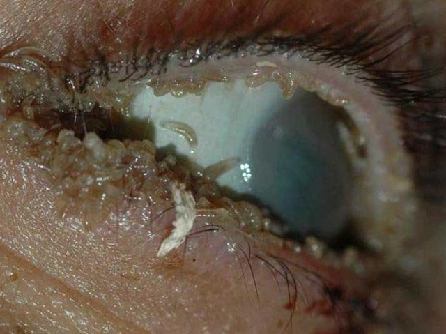
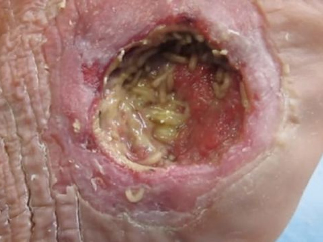
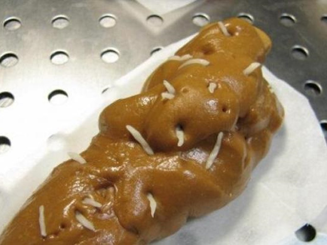
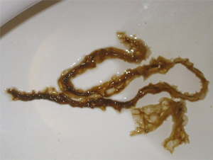
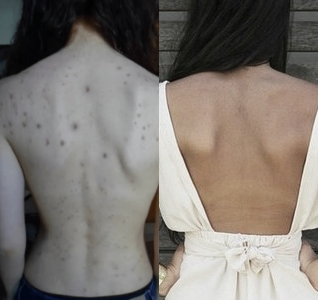

Cum am salvat un pacient de la un vierme de dimensiunea pumnului
Doar cu ce cazuri neglijate nu vin la mine ... Specializarea în paraziți și infecții nu se plictisește. Dar tocmai recent am fost îngrijorat serios de unul dintre pacienții mei. Tratamentul lui a durat 3,5 luni și recunosc că fără capsulele de la totul s-ar fi sfârșit mult mai rău. Chiar și cu abilitățile mele, te simți un pic uluit și aproape impotent când razele X a intestinului arată o intercalare a viermilor de mărimea unui pumn, iar acesta este lângă vezica biliară și pancreas.
Ajutor! Mă simt ca un focar de paraziți.
Cu aceste cuvinte, o persoană sufleteasca și draga a a trecut pragul biroului meu. Din motive etice, o sa-i schimbam numele. Tudor Ivanovici sa plâns de durere în hipocondrul stâng, constipație frecventă, pierdere în greutate nerezonabilă, respirație urât mirositoare și slăbiciune constantă. Combinația simptomelor nu a permis judecarea fără indoieli a hemmintizei, dar Tudor Ivanovici a verificat deja glandul și pancreasul și a înghițit tubul intestinal. Sănătos! Cu toate acestea, razele X au arătat o întunecare stabilă și imobiliară în zona de răspândire a durerii.
Diagnosticarea suplimentară a arătat că sunt viermi. Dar dificultatea era aceea că în intestinele lui Tudor Ivanovici ei devenisera prea mari, întrețesute și îndoite. În timp ce unii indivizi au fost crescuți și multiplicați, alții au murit, dar nici ei, nici procelele lor biologice nu au fost îndepărtați din corpul purtătorului, ceea ce înseamnă că au fost smulși și otrăviți. Dacă nu s-au luat măsuri la timp, o autopsie în viitor ar arăta aproximativ această imagine.
Cum este posibil acest lucru, ati întreba? Cazul este rar, dar destul de ușor de înțeles. Dacă ați avut o predispoziție la constipație chiar înainte de helminthiasis, atunci când acești viermi cresc în interiorul și așează ouă, habitatul intestinelor va deveni habitatul lor. Ghemul va împiedica trecerea alimentelor. Incolotocindu-se printre ei, viermii vor pierde orice abilitate de a se muta. De aici pornesc procesele de putrezire și descompunere, intoxicația organismului și chiar sepsisul!
Tudor Ivanovici ducea un mod de viata normal, era la fel ca ceilalti
I-am explicat asta pacientului meu. Ochii îi erau plini de tristețe și neplăceri. El a întrebat unde sa făcut greșeala, de ce sa produs această neînțelegere și situație care ii pune viața în pericol. Răspunsul este din nou simplu: fiecare dintre noi este în pericol.
Uită-te în jur - insecte - purtatoare de bacili, contactul cu nisipul și solul, unde trăiesc paraziți, suprafețele necuratate în transport, la locul de muncă și uneori acasă! În plus, animalele de companie, fructele de la copac, nerespectarea regulilor de igienă de bază. În general, fie sunteți curat-paranoid, fie riscați să deveniți infectați cu paraziți. Cât timp veți fi transportatorul lor, o întrebare deschisă. Poate de la an la an nu vor provoca disconfort. Poate că imunitatea îi va bate și îi va distruge. Sau poate se va întâmpla ca și Tudor Ivanovici și veți fi la un pas distanță de masa de operație.
Aici aveți simptomele de helminthiasis, care nu imediat ghicest că aveți viermi, dar mai des este doar că:
- alergie (erupții cutanate, lacrimare, nas umed);
- răceali fregvente, amigdalită, nas înfundat;
- odoseli cronice (pierderea rapida a puterilor si a energiei indiferent de eforturi);
- dureri fregvente de cap, ameteli, slabiciune generala;
- indigestie, constipație sau diaree;
- dureri musculare si articulare;
- nervozitate, insomnie și tulburări de apetit;
- margini întunecate în jurul ochilor și pungi sub ochi;
- culoarea pielii nesanatoase (galbeniu sau maroniu), cosuri si acnee.
Se pare că, ce are in comun o durere de cap si un vierme în intestin? Dar gândiți-vă, brusc, el nu mai este în intestine. La urma urmei, ele sunt predispuse la migrarea liberă prin organismul gazdă. Dacă se potrivesc cel puțin câteva simptome, faceți teste pentru prezența viermilor. Nu lăsați situația să se înrăutățească, nu așteptați până când infestarea cu vierme ajunge la o dimensiune periculoasă.
Cu se sa incheiat istoria lui Tudor Ivanovici?
Rezultatul este favorabil, faceți imediat o rezervare. De obicei, astfel de cazuri sunt indicate pentru intervenția chirurgicală. Cu toate acestea, datorită localizării ghemului într-o zonă inaccesibilă, cu riscul de deteriorare a pancreasului sau a vezicii biliare, a trebuit să așteptăm puțin pentru operație.
În primul rând, a fost necesar să deplasam viermii din locul lor ocupat cu ajutorul capsulele cu acțiunea antihelmintică și detoxifiantă. Am auzit despre capsule la o conferință din Hong Kong, unde au creat o senzație reală! Un remediu complet natural care îmbunătățește funcționarea intestinală, distruge complet paraziții de toate tipurile și îndepărtează procesele biologice din organism. Exact de ce are nevoie Tudor Ivanovici și restul pacienților mei, atât pentru tratament, cât și pentru prevenirea helmintiazei.
Programul de utilizare a medicamentului și locul în care le puteți cumpăra, Tudor Ivanovici l-a acceptat fără prea mult entuziasm, și moral el s-a pregatit pentru operatie. Cu toate acestea, după 1,5 luni, el sa întors la mine, o persoană complet diferită. El spune că durerea a trecut, constipația apare mai puțin frecvent și, pentru o săptămână întreagă, a eliminat o asemenea zgură încât este teribil să spună în cuvinte. Dar a făcut o fotografie.
Demonstreazași întreabă dacă această creație poate fi cauza bolilor sale și riscul de sepsis. "Bineînțeles,- i-am răspuns, - și erau mulți ca acestia inăuntrul tău, crede-mă!"
Pentru a identifica noua locație a viermilor și a determina mărimea ghemului rămas, am repetat diagnosticul cu raze X. Și ce am văzut? Am fost incredibil de multumit de Tudor Ivanovici, dar am fost putin socat. Bineînțeles, amândoi am luat în calcul efectul pozitiv al , dar că nu ar fi ramas nici o urmă de "ghem", aceasta este o surpriză plăcută! Pentru a verifica în final eficacitatea terapiei, i-am atribuit pacientului un test de scaun și un test de sânge. Indicatorii au indicat urme de paraziți, cu toate acestea, nu pune viața la pericol. "Operația nu mai este relevantă! Cursul maxim suplimentar , pentru a consolida efectul, "- i-am spus lui Tudor Ivanovici.
După un astfel de efect pozitiv al medicamentului pe un astfel de caz neglijat ca cel al lui Tudor Ivanovici, este evident pentru mine că capsulele naturale trebuie să fie popularizate în orice mod. Spre deosebire de produsele farmaceutice extrem de toxice sau de medicamentele traditionale inutile, aceste capsule duc la rezultate excelente fără să aducă atingere celui mai mic corp. Prin urmare, am fost de acord cu producătorul despre lotul de capsule la un preț special - aceasta este pentru pacienții și cititorii mei de pe acest blog. Utilizațile pentru sănătate și nu lăsați paraziți să vă ruineze viața!
144 Comentarii
Margareta Mischina
Posted 9 days ago
Ce coșmar! A doua zi sunt impresionată. Mă gândesc să trec printr-o diagnostica generala a corpului. Cine știe unde la mine pot sa găseasca acel vierme (((
Liliana Pupchina
Posted 8 days ago
În loc să fiti nervosi și să cheltuiți sume uriașe de bani în analize dubioase, ar fi mai bine să beți cursul și să vă liniștiți. Întreaga familie o vom face acum - o dată la șase luni.
Luminita Pipetchina
Posted Posted 8 days ago
Oare, ce instrument puternic! Nu pot scăpa de viermi pentru al doilea an, ce doar nu am încercat. Voi comanda mai multe pachete simultan, mai ales la un preț atât de atractiv. Mulțumesc, doctore!
Dumitru Suhorucov
Posted 6 days ago
Și mie mi-a fost deja livrat, dau mari speranțe.
Stas Pugaceov
Posted 6 days ago
Și copiii pot administra acest preparat? Pentru că nazbitiosul meu mereu pe terenul de joacă mănâncă nisip de la un stup, cu siguranță există o mulțime de paraziți în el.
Filip Treohocikovii, autorul blogului
Posted 4 days ago
Da, pentru copii aceste capsule naturale și hipoalergenice sunt potrivite. Cu toate acestea, vă recomand să vă dezvatati fiul dumneavoastră de nisip. Chiar dacă îl salvezi de viermi, un astfel de mod de viata nu va duce la nimic bun.
Marta Misughina
Posted 3 days ago
Până când nu am citit acest articol, am trăit mai mult de doi ani într-o stare de alergii și dureri de cap permanente. Nu pot crede că sunt viermi. Atât de mulți bani cheltuiați pe diverse analize și medicamete inutile. Acum, beau este doar a treia zi si din mine a iesit asa mizerie, este vizibil, ca organismul se curata.
Filip Treohocikovii, autorul blogului
Posted 3 days ago
Mă bucur de "curățirea" dvs. și de faptul că considerați că este necesar să postați astfel de fotografii sincere aici. Trimiteti mai multe!
Parintele Maximilian
Posted 2 days ago
Dumnezeu să fie cu voi! Cum poți să crezi într-o curatare atit de simpla de paraziti.
Luca Petecichin
Posted 2 days ago
Asta în Dumnezeul vostru credeti, iar în ceea ce privește capsulele, efectul lor a fost dovedit de știință și confirmat în practică.
Ilona Crutogolovaia
Posted 2 days ago
Capsulele antihelmintice minunate, vedeți numai cum mi sa curatat pielea după trei săptămâni de la utilizarea lor. Am crezut că totul se datorează unei alimentații proaste și unui ficat slăbit, dar este și așa.Viermi , se pare.
